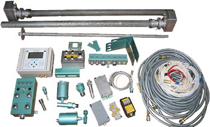
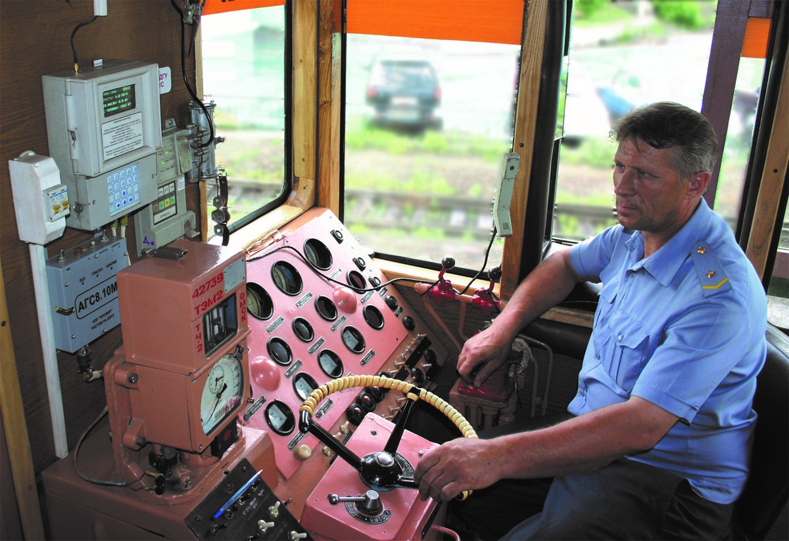

Аппаратно-программный комплекс «БОРТ»

НАЗНАЧЕНИЕ И ОБЛАСТЬ ПРИМЕНЕНИЯ
Аппаратно-программный комплекс (АПК) «Борт», предназначен для диагностирования и контроля за тепло-техническим состоянием дизель-генераторных установок (ДГУ) тепловозов серии ЧМЭ3, ЧМЭ3Т, ЧМЭ3Э, ТЭМ2, ТЭМ3, ТЭМ18
и магистральных тепловозов 2ТЭ10, 2ТЭ116.

ФУНКЦИОНАЛЬНЫЕ ВОЗМОЖНОСТИ
- Непрерывный контроль технического состояния ДГУ.
- Точный учет количества уровня топлива в баке, исключение несанкционированных сливов топлива.
- Контроль наличия подтоварной воды в баке.
- Создание статистической базы для формирования системы объективной информации о расходе топлива на тягу
поездов для конкретной подвижной единицы с учётом условий эксплуатации
- Создание условий для организации новой системы нормирования по фактическому расходу топливных ресурсов
исходя из условий эксплуатации, технического состояния и вида маневровой работы тепловозного парка.
ТЕХНИЧЕСКИЕ ХАРАКТЕРИСТИКИ
| Параметры |
Значение |
| Напряжение питания, В |
75, 110 |
| Потребляемая мощность, Вт |
100 |
| Масса, кг |
50 |